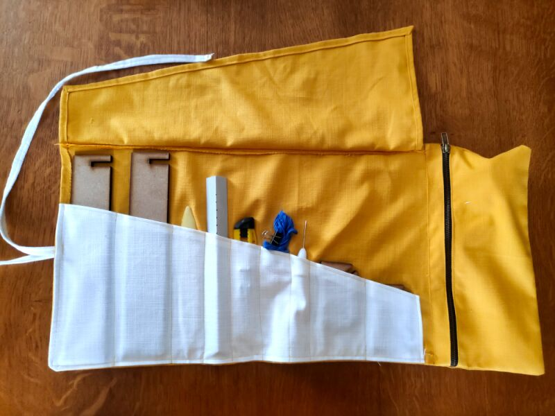

saddle stitch binding
go-to technique for making small notebooks
I like to make my own notebooks. That way I'm not anxious when I write in them. It's a also good way to use old printouts.

You can do without a cover, but having one makes your books prettier and more durable. Materials that can be used for making a cover include: